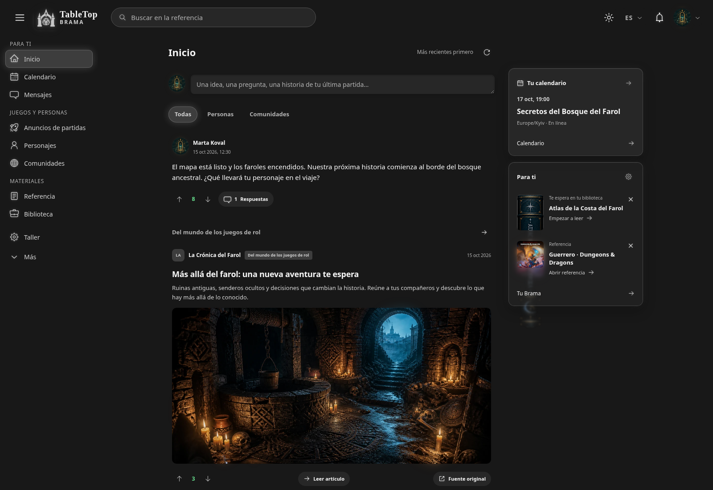
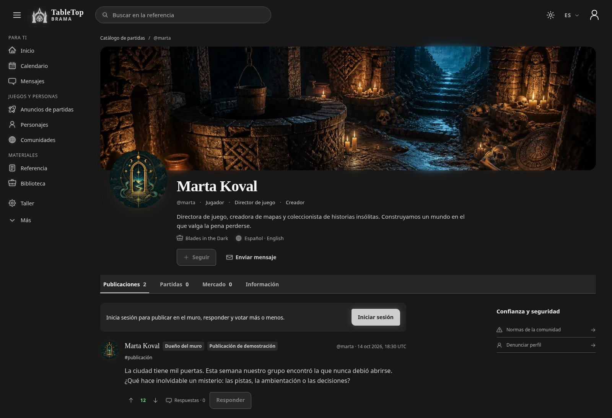
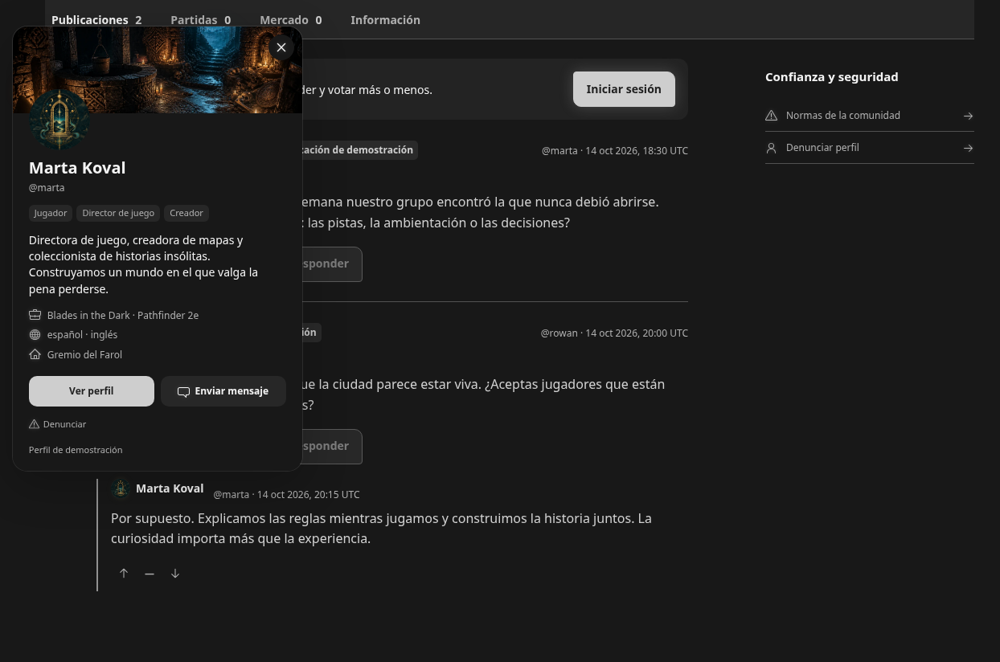
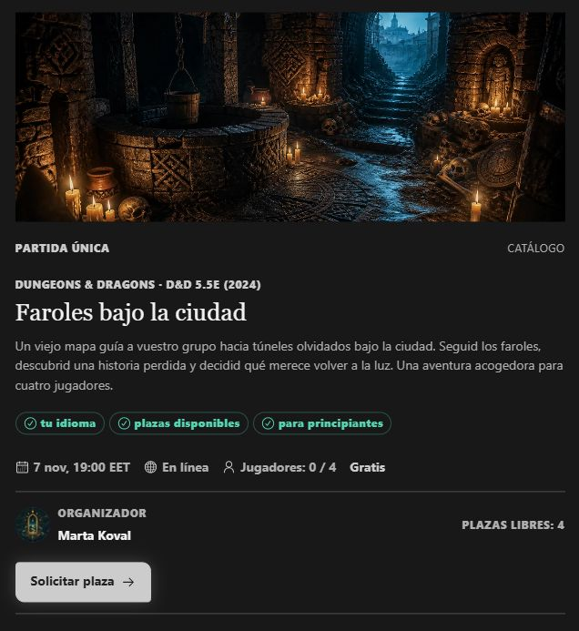
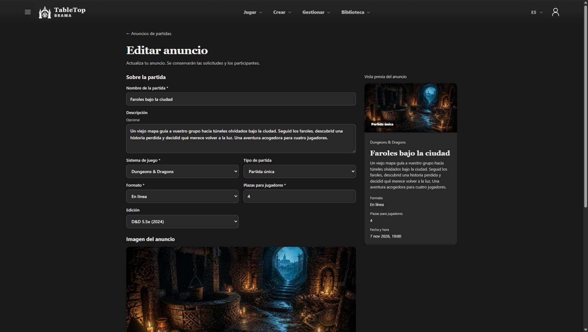
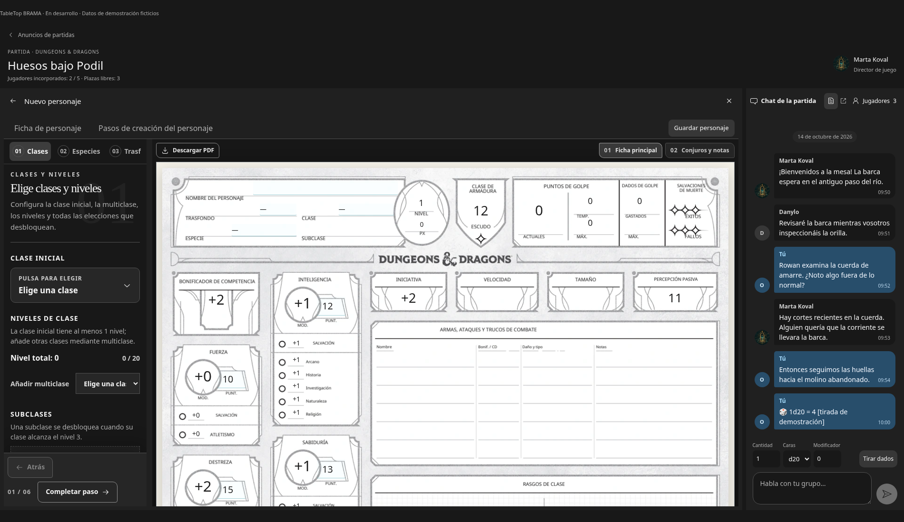
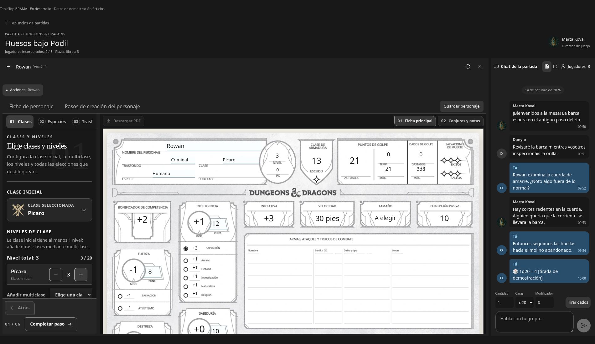
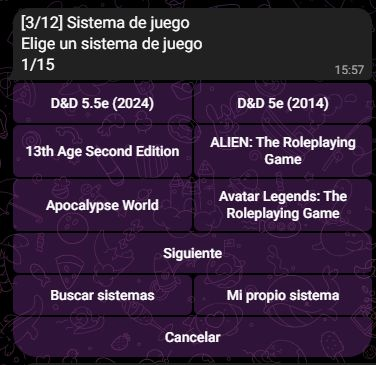
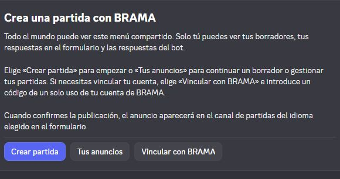

Qué ha cambiado
He actualizado el diseño y los perfiles de TableTop BRAMA. Ahora estoy trabajando en los anuncios de partidas, el espacio de juego y los bots de Telegram/Discord para esos anuncios.
Ya están disponibles las tarjetas de perfil: pulsa el nombre o avatar en los comentarios para ver el perfil, los roles, la descripción y los enlaces de esa persona sin salir de la página. La carga de avatares y portadas también se ha optimizado conservando la animación.
Lo que estoy afinando ahora:
- Anuncios de partidas: editarlos sin perder solicitudes, elegir con más claridad el sistema y la edición, y usar una fecha exacta, un intervalo o una fecha por acordar. El catálogo común para anuncios tiene entradas separadas de D&D 2024 y 2014.
- Espacio de juego: crear un personaje o vincular uno de la biblioteca, tener la ficha junto al chat y enviar sus pruebas al chat compartido. Estoy afinando la conexión entre estos pasos.
- Bots para anuncios: conectar los procesos de Telegram y Discord con BRAMA, incluido un formulario privado de Discord, la elección guardada del idioma de la interfaz y los canales correspondientes. El trabajo en la interfaz abarca ucraniano, inglés, polaco, checo y español.
BRAMA sigue en desarrollo y el sitio aún no es público. Las capturas utilizan perfiles y contenido de demostración ficticios.
Capturas de pantalla
- Diseño renovado de BRAMA
- Perfil de demostración
- Tarjeta de perfil en una conversación
- Anuncio de partida
- Editor de anuncios
- Crear un personaje dentro de la partida
- Ficha de personaje junto al chat del grupo
- Crear anuncios en Telegram
- Herramientas de anuncios en Discord
Diseño renovado de BRAMA
Diseño renovado de BRAMA: publicaciones, navegación y contenido multimedia en un mismo espacio.

Perfil de demostración
Un perfil renovado con portada, avatar, roles y muro personal.

Tarjeta de perfil en una conversación
Haz clic en el nombre o el avatar para ver la tarjeta del perfil sin salir de la conversación.

Anuncio de partida
Un anuncio ilustrado con sistema, edición, horario, plazas libres y botón para solicitar plaza. Partida ficticia de demostración.

Editor de anuncios
Edición de un anuncio de demostración con el sistema, la edición, las plazas y la vista previa visibles. Este proceso sigue en desarrollo.

Crear un personaje dentro de la partida
Creación de un personaje de D&D con la ficha visible junto a los ajustes y el chat de la partida. Demostración de la plataforma en desarrollo.

Ficha de personaje junto al chat del grupo
Edición de un personaje de D&D dentro de la partida. La ficha y la conversación del grupo permanecen juntas. Datos de demostración ficticios.

Crear anuncios en Telegram
El selector de sistemas del bot de Telegram: entradas separadas para D&D 2024 y 2014, búsqueda y opción de sistema propio.

Herramientas de anuncios en Discord
El menú del bot de Discord para crear partidas, continuar borradores y vincular BRAMA. Las respuestas del formulario y del bot solo las ve la persona que utiliza el proceso.
